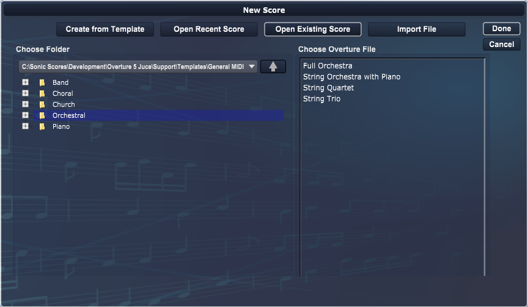

Open Existing Score
Getting Started
››

Choose the folder containing your scores using the browser controls on left side.
Click on the desired score in the list and click the
Done
button or just double-click on the score.